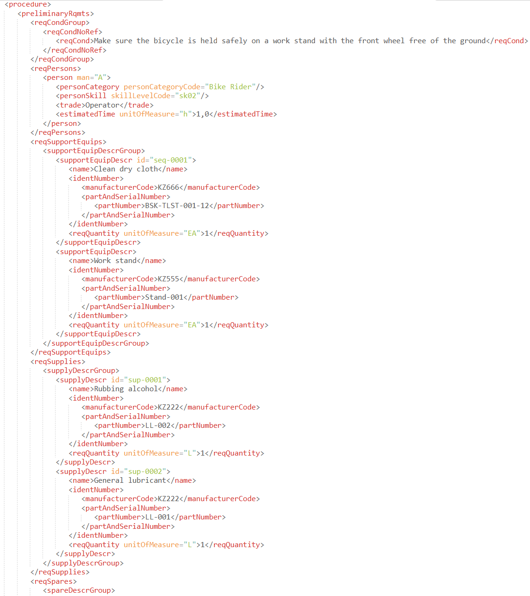
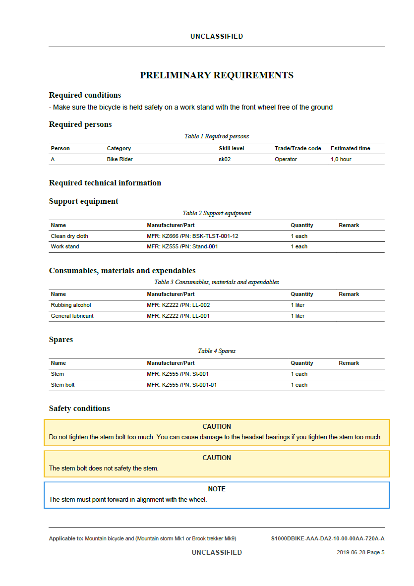

Contrôler
Fichiers rejetés, XSD non respecté, corpus trop volumineux pour un contrôle manuel.
Voir l'interventionVous avez des fichiers, corpus ou documents XML à contrôler, exploiter, transformer, convertir, corriger, migrer ou publier : PPR-Solution prend en charge le traitement et vous fournit les résultats et livrables nécessaires. Expertise particulière en documentation structurée et S1000D.
Un interlocuteur unique, des retours rapides et suivis.
Vos fichiers ne servent qu'à l'analyse demandée ; NDA disponible sur demande.
Transferts chiffrés (HTTPS) et canal dédié convenu pour les missions confidentielles.
XML est le cœur de compétence. Sept opérations, une seule expertise centrale.
Fichiers rejetés, XSD non respecté, corpus trop volumineux pour un contrôle manuel.
Voir l'interventionUn corpus à analyser, classer et corriger, avec des originaux préservés.
Voir l'interventionDes informations précises à récupérer dans des milliers de XML.
Voir l'interventionXML vers un autre modèle XML, ou vers/depuis CSV, Excel, JSON, SQL.
Voir l'interventionChangement de version de schéma, de standard, ou données historiques à faire évoluer.
Voir l'interventionIdentifier précisément les différences entre deux fichiers, corpus ou versions.
Voir l'interventionGénérer des documents (PDF, HTML) fiables et reproductibles à partir de vos XML.
Voir l'interventionPPR-Solution prend en charge vos problématiques XML et vous remet des livrables structurés, contrôlés et traçables.
Sept familles d'intervention, toutes centrées sur une problématique XML.
La documentation structurée et le standard S1000D constituent une spécialisation forte de cette activité XML : inventaire de corpus, résolution de schémas, précontrôle avant livraison. Les autres standards documentés (DITA, DocBook, référentiels sectoriels) sont étudiés au cas par cas.
Voir l'expertise S1000DLorsque votre format repose sur un schéma, une spécification ou des règles documentées, PPR-Solution peut étudier sa structure et mettre en place un contrôle adapté. Nous n'affirmons pas maîtriser toutes les normes XML existantes : nous étudions les formats documentés au cas par cas. S1000D reste notre expertise déjà disponible.
Voir notre approcheDu fichier XML brut à une publication PDF conforme.

Données XML
Publication PDFExemple illustratif du type de transformation réalisée (module XML source vers publication PDF).
Conversion de vos formats sources (Word, PDF, données métier) en XML structuré
Validation structurelle et conformité aux règles métier ou BREX de votre programme
Extraction et consolidation de données XML vers Excel, CSV, JSON ou SQL
Génération automatique de publications (PDF, HTML) depuis vos modules
Des exemples et jeux d'essai pour illustrer concrètement nos interventions, dont un validateur XML S1000D en ligne.
Nos articles pour approfondir la validation XML, l'extraction de données, la transformation documentaire et S1000D.
Panorama rapide du standard, de ses objectifs et de la logique modulaire.
Lire l'articleComment aligner S1000D, S2000M et S3000L pour fluidifier vos chaînes logistiques.
Lire l'articleStructurer, valider, transformer : pourquoi le XML reste incontournable pour vos publications.
Lire l'article